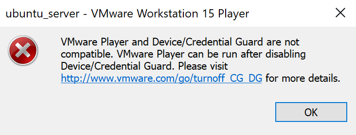

Ultima modifica: 26/10/2019
Qunado installo una nuova macchina virtuale in VMware Workstation Player 15 su Windows 10 con Hyper-V attivo, ottengo questo errore:
VMware Player and Device/Credential Guard are not compatible. VMware Player can be run after disabling Device/Credential Guard. Please visit http://www.wmware.com/go/turnoff_CG_DG for more details.

La soluzione è disattivare Hyper-V, aprendo il prompt dei comandi come amministratore e digitando il comando:
bcdedit /set hypervisorlaunchtype off
E' necessario un riavvio del PC per rendere effettive le modifiche.
Per riattivare Hyper-V usare questo comando:
bcdedit /set hypervisorlaunchtype auto
Anche in questo caso è necessario un riavvio.